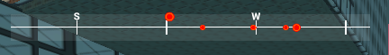
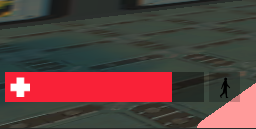
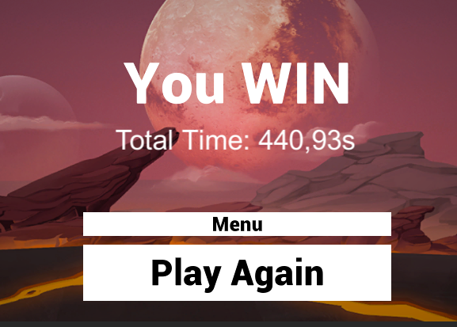
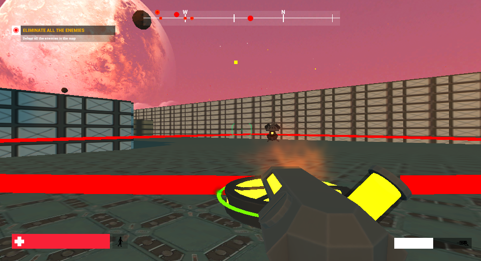
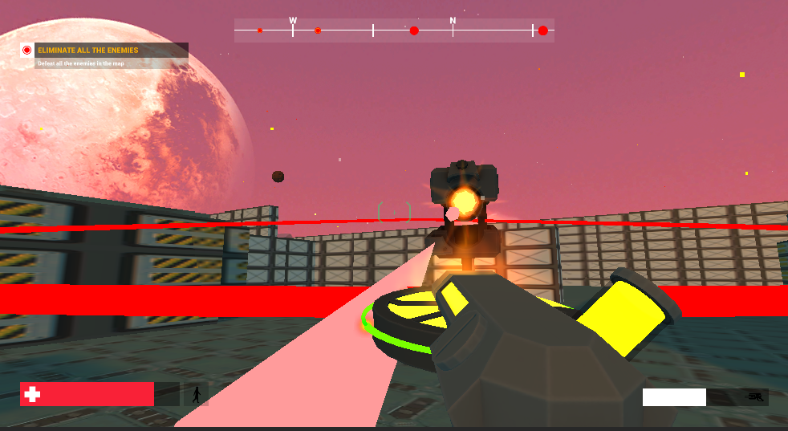
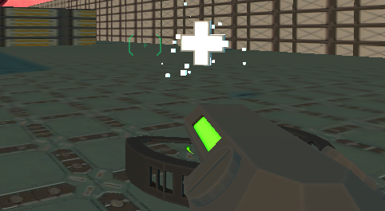

Orbital è un videogioco in prima persona in cui è richiesto al giocatore di ripulire l'arena di gioco da nemici generati casualmente che cercheranno di distruggerlo.
L'arena di gioco è composta da un cortile e da una stanza sopraelevata raggiungibile tramite una rampa, entrambe limitate da pareti che fungono da ostacoli per il giocatore e la sua arma.
Il giocatore può eseguire diverse azioni, tra cui: saltare, correre, caricare l'arma e rilasciarla.

Il sistema di sparo funziona una volta che l'arma è stata caricata: per caricare l'arma bisogna tenere premuto il tasto di sparo (click sinistro del mouse) e rilasciarlo per sparare: più si tiene premuto più la curva del proiettile sarà ampia.
I nemici vengono generati casualmente ad ogni partita, di conseguenza è stato inserito un radar in alto al centro che aiuta ad individuare la loro posizione: Il radar individua tutti i nemici presenti e aiuta a localizzarli: se un nemico si trova al centro di questo radar vuol dire che è davanti al giocatore altrimenti sarà a destra o sinistra del giocatore in dipendenza dalla sua posizione. Se un nemico risulta in una posizione sopraelevata, sarà anche sul radar indicato come sopraelevato. Il punto rosso che indica un nemico sarà più o meno grande a seconda di quanto vicino / lontano è dal giocatore. Le scritte N/W/S/E indicano i punti cardinali (Nord/Ovest/Sud/Est) per avere un riferimento più chiaro della posizione del giocatore.
I nemici risponderanno al fuoco e seguiranno il giocatore: ricevere un proiettile nemico significa decrementare la propria barra della salute in basso a sinistra. Portare la propria barra salute a 0 significa aver perso. Sarà mostrata una schermata di Game Over.
Per vincere è necessario eliminare tutti i nemici, questi sono dello stesso numero e tipo per ogni partita, in particolare: 5 robot piccoli e una torretta grande (nel caso di quest'ultima, non si può muovere, ma saranno necessari diversi colpi per distruggerla).
Nel caso di vittoria sarà mostrata una schermata di vincita con relativo tempo impiegato. l tempo inizia a scorrere subito dopo che viene mostrato l'obiettivo al giocatore ad inizio partita, ovvero "Eliminate all the enemies". E' possibile così comparare il tempo impiegato con i propri amici e sfidarsi a vicenda.
Comandi
- Cammina con W, A, S , D
- Tieni premuto il TASTO SINISTRO del mouse per sparare (non è necessario il tasto destro)
- Salta con SPAZIO
- Corri con SHIFT

L'arma spara proiettili con traiettorie "a boomerang": più l'arma sarà carica più la traiettoria sarà ampia e il danno elevato. Per caricare l'arma è necessario tenere premuto il tasto sinistro del mouse: rilasciarlo farà partire il proiettile che seguirà la traiettoria scelta. La traiettoria risultante viene suggerita dal gioco ad ogni carica, questa diventa rossa quando è molto probabile che colpisca un nemico.
Per distruggere un nemico è necessario che un proiettile lo colpisca direttamente o indirettamente (esploda vicino).
Dopo aver sparato 2 VOLTE di seguito l'arma dovrà essere RAFFREDDATA: la barra di raffreddamento è segnalata in basso a destra. Il raffreddamento dura circa 2 secondi, in quest'arco di tempo il giocatore deve cercare di evitare i proiettili nemici e/o programmare il prossimo sparo. Non ci sono limitazioni al numero di proiettili posseduti dal giocatore.
Ogni nemico ucciso lascia nella posizione in cui è stato eliminato un bonus di salute segnalato da una croce bianca che resta per tutta la durata della partita. Il bonus (la croce bianca) si può prendere passandoci sopra e ripristinerà il 40% della salute iniziale indipendentemente da quanta il giocatore ne avesse persa in quel momento.
